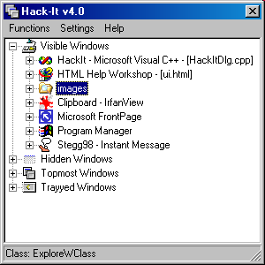

Hack-It v4.0 Help |
| The Status Bar |
|
The status bar is located at the bottom of the Hack-It main window. It serves two purposes: Display brief help on menu options as they are highlighted Display the window class name of the window selected in the Window List.  If the item selected in the window list is not a window, or the name of the window class cannot be determined, the status bar will be blank. The status bar is useful for creating automatic functions - you can use it to determine the window class name of a window, and use that class name in the automatic function. Also useful for informational purposes is the Window Information Dialog |
|
Copyright 2002, Headius Incorporated |